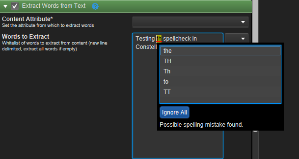
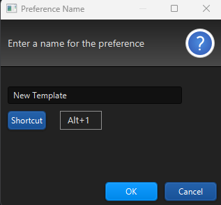

What's new in Constellation v3.2
Here is a list of changes we’ve added to this version of Constellation.
Spellcheck
Spellcheck has been added to selected text areas in Constellation. Currently it is available in the Data Access View in the plugins Extract Types from Text and Extract Words from Text, and it is planned to be added to other parts of Constellation in the future.
When enabled, incorrect spellings and some grammar errors are highlighted and underlined. Left Clicking on a highlighted word/phrase will pop up a suggestions list to choose from. An "Ignore All" button is available for spelling errors which will ignore the same error in the current text area.
The Constellation option "Enable spell checking in specified text areas", which is enabled by default, is used to enable/disable spell checking. If it is set, the right click context menu option "Turn On Spell Checking" will be available on fields where it has been enabled, and it can be used to toggle on/off spell checking dynamically.
Shortcuts for Data Access View Workflow Templates
The workflow templates in the Data Access View can now be saved with keyboard shortcuts assigned which allows for templates to be loaded without navigating through the Load Templates popup. Templates can be saved with any keyboard shortcut that is not already in use in Constellation to make it more convenient to swap between them.
Complete With Schema on Selected Graph Elements
Complete with Schema is a plugin which updates all nodes and transactions on a graph to match the predetermined values for the current schema. Previously the only way to run Complete with Schema was to have it run on all elements of the graph. Now there is a new option which allows for Complete with Schema to only be run on the nodes and transactions which are actively selected. Complete with Schema on Selection has been added to allow for any custom changes made on specific graph elements to be preserved while still being able to run Complete with Schema on the rest of the graph. This can be found in Tools -> Complete with Schema on Selection.
Find and Replace with an Empty String
The Find View has been enhanced to allow for search phrases to be replaced with an empty string. Some examples of this would be to remove unnecessary blank spaces from within text attributes or removing the '+' out of phone numbers that are formatted as +61400000000. To do this in the Find View, in the Replace tab enter a search character or word into the Find textbox and leave the Replace one empty.
Type Ahead in Multichoice Input Fields
Similar to how single choice input fields work, multichoice input fields now have the ability to type ahead to select the choices in the list that match the text typed. When typing in a multichoice input field or drop-down list, a suggestions list of any choices that match what has been typed will appear.
REST API Now Has Example Values for All Responses
The Constellation REST server API documentation has been updated to include example values for all possible responses. More information about the Constellation REST Server can be found here.
Several Bug Fixes
Numerous bug fixes have also been made including:
- Extract Words from Text will now work with non-English characters
- The Add Layer and Deselect Layers buttons on the Layers View now work when the view is minimised
- The Analytic View has better performance
- Complete With Schema works on custom types of Nodes and Transactions
- Quality Control View colours have been updated to make it easier to see what is selected
- Irrelevant additional nodes and transactions are no longer created when destroying composites
Want to know more?
You can find out more information about the latest updates on the What's new page once you have installed version 3.1. There's loads of extra details available in the Release Notes and Change Log.
Would you like to learn more about how Constellation works?
There is a training package available on GitHub to learn how to make the most use of the various features in Constellation. There is also developer training for those seeking to deep dive into the underlying source code.
Contact Us
Do you have any feedback or suggestions for improvement? Noticed a bug? You can log an issue via the Help menu or clicking here.